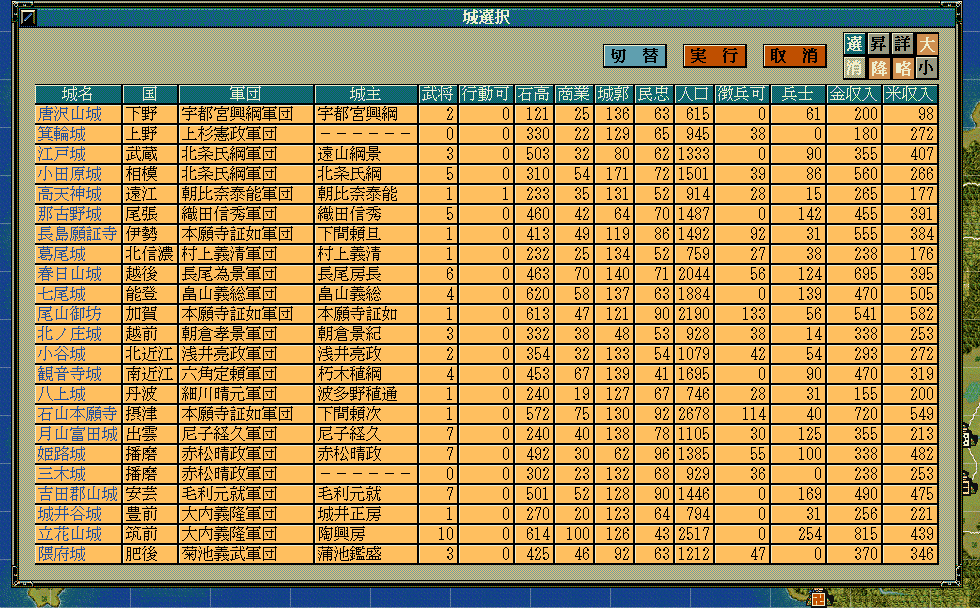
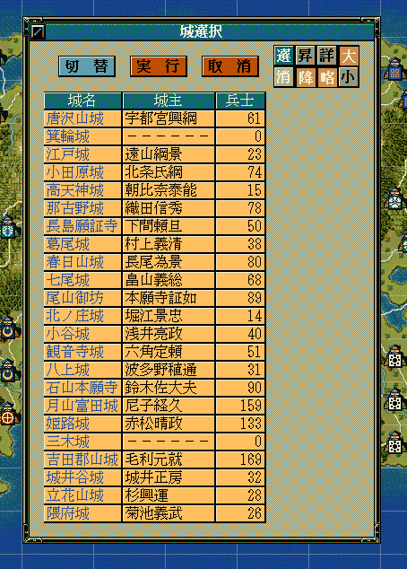
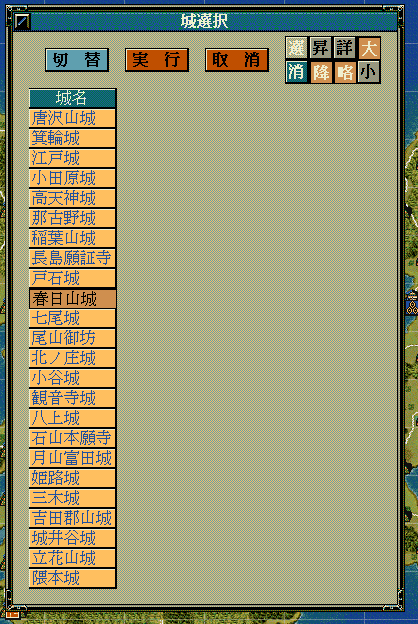

城のリストを表示して、そこから選択してもらうためのダイアログを表示するAPIです。
大小関わらず、自作の独自イベントなどで利用することになるでしょう。
void カスタム::On_プレイヤ担当ターン《メイン画面》() {
番号リスト型 ShowCastleList;
for (int iCastleID = 0; iCastleID < 最大数::城情報::配列数; iCastleID++) {
// 居城である
if (p城情報[iCastleID].巨城 == TRUE) {
ShowCastleList.push_back(iCastleID);
}
}
int iSelectedCastleID = 選択城ダイアログ表示(ShowCastleList, カラム::城::デフォルト);
if (0 < iSelectedCastleID && iSelectedCastleID < 最大数::城情報::配列数) {
デバッグ出力 << Get_城名(iSelectedCastleID) + Get_城称(iSelectedCastleID ) << "が選択されました" << endl;
}
else {
デバッグ出力 << "城は選択されませんでした" << endl;
}
}

int iSelectedCastleID = 選択城ダイアログ表示(ShowCastleList, カラム::城::城名|カラム::城::城主| カラム::城::兵士);

int iSelectedCastleID = 選択城ダイアログ表示(ShowCastleList, カラム::城::城名);

「城ダイアログ」に関する主な所は以上となります。 詳しくは「ダイアログ情報型.h」を参照してください。